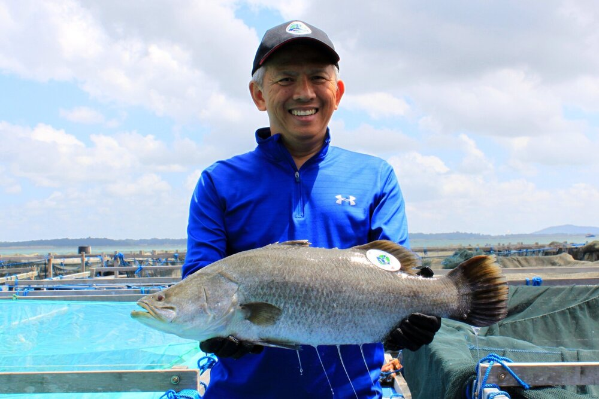

Our Mission
EAT FISH!
At the Fish Farmer, we believe in eating well and respecting our environment. Our fish are given space to swim in the ocean with tides and current and given time to grow so the textures are firm and natural-tasting. We farm fish without any growth enhancements. More than 70% of our farm is made of recycled materials and we use renewable solar energy for power. Love Seafood, Love the Sea.
In this millennium, scientists predicted there would be a sharp drop in wild catch from the sea due to global warming, over-fishing and pollution. In 2007, CEO Malcolm Ong decided there is a need for fish farming. Fish farming is similar to growing trees. We can’t keep cutting down trees; we have to replant trees to sustain the forest. Similarly, we can’t keep catching fish; we have to farm fish to sustain the oceans. And hence The Fish Farmer was founded to provide fresh, safe & sustainable fish to the local market.
We learnt farming techniques from traditional farmers who were farming for decades. So we built more than 100 caged long nets along sheltered waterways. This allows our fish to swim and exercise with the tides and absorb the natural nutrients and the sea environment. Therefore our fish has a firm texture, no mud taste and has the same flavour as wild-caught fishes. The Japanese call this flavour Umami which means pleasant savoury taste. We don’t rush our fish - each fish is given time and space to grow. It takes a year to grow to plate size and more than 2 years to grow to fillet size. Our fish are entirely naturally grown, without any growth enhancements. We adhere to the strict rules for food safety set out by the Singapore government. The Fish Farmer is the only farm in Singapore with the widest variety of fish. We are proud to boast that we are the largest producer of Mullet, Milkfish, Red Snapper and SeaPerch.
About The Fish Farmer's Founder, Malcolm Ong
While some individuals venture into aquaculture, becoming a farmer was like coming home for Malcolm Ong. Malcolm entered the realm of aquaculture after meeting and befriending traditional fish farmers following his success as Managing Director of a French software corporation. The Fish Farmer's four farms now produce a wide range of fish and fish-based food items, including grey mullet, milkfish, red snapper, barramundi, and sea perch, thanks to his leadership.